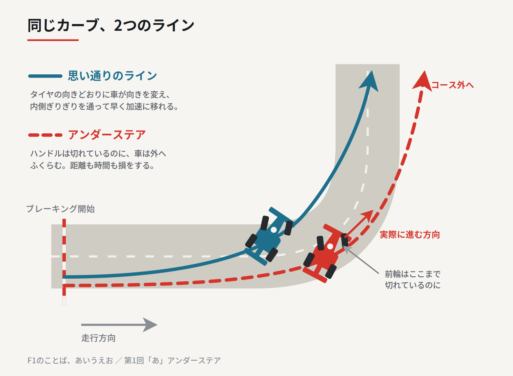

意匠見本
図版キャプションの見え方
仕様書は _specs/caption-design.md。文言はすべてダミー。
本文の段落に挟んで並べてある。キャプションが本文の続きに見えないか、
図とキャプションが1つの塊に見えるかを、390px と 1280px の両方で見てほしい。
ここは本文の段落です。文字サイズは17px（600px以上で18px）、行間1.9、色は --ink。
この段落と、下の図のキャプションが見分けられるかどうかが、この意匠の合否になります。
A. キャプション有り（40字）


図とキャプションの間は12px、キャプションと次の本文の間は36px。この1対3の比だけで、 キャプションがどちらに属しているかが読めます。左の縦罫は画像の縁と同じ色です。
B. キャプション無し（未記入の回）

キャプションが無い回は、案内文だけが1行出ます。span.cap-text を出力しないだけで、
現行のビルド出力とまったく同じHTMLです。行頭の字下げは :only-child で消しています。
文字数による折り返しの比較
画像を省き、キャプションだけを並べたもの。想定は40字前後だが、短い場合・長い場合に どう折り返すかを見るための欄。見本専用で、本番には出さない。
25字
40字（想定）
60字（長すぎる例）
案内文のみ
60字は390pxで3行になり、案内文を入れると4行に届く。text-wrap:balance の効きも
4行前後で頭打ちになるため、文言は40字前後を上限の目安としたい（文言側への申し送り）。